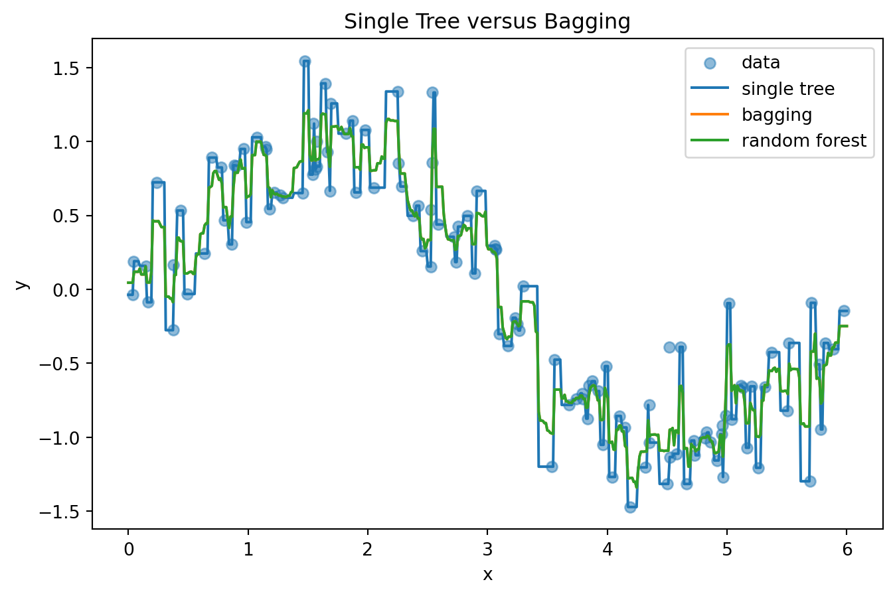
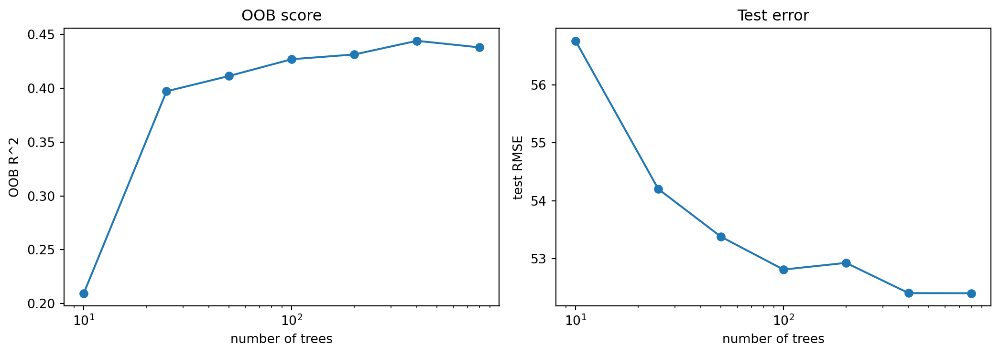
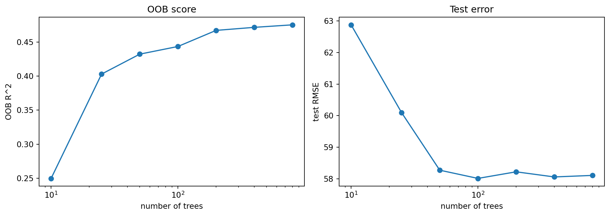
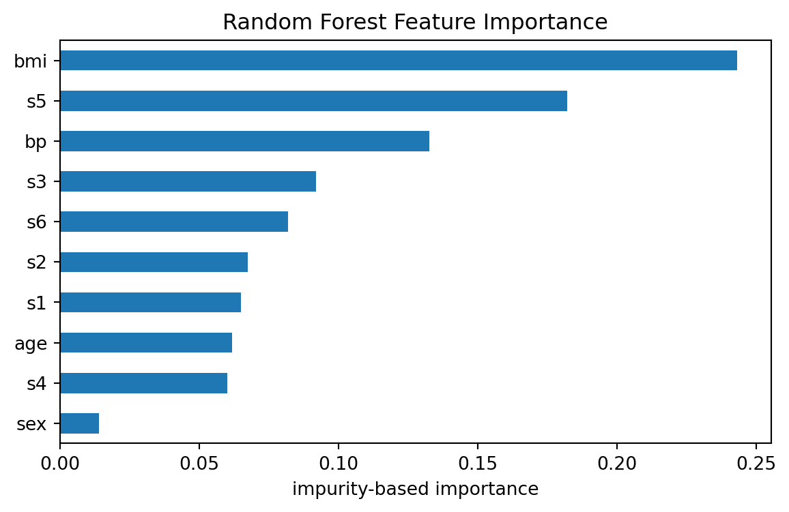
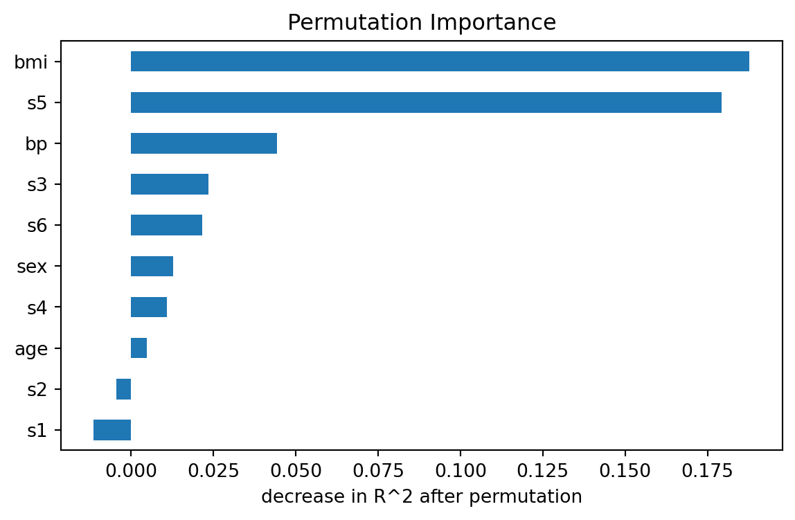

from sklearn.ensemble import BaggingRegressor
from sklearn.tree import DecisionTreeRegressor
bag = BaggingRegressor(
estimator=DecisionTreeRegressor(random_state=0),
n_estimators=300,
max_samples=1.0,
bootstrap=True,
oob_score=True,
random_state=0,
n_jobs=-1,
)12 Bagging and Random Forests
\[ \require{physics} \require{braket} \]
\[ \newcommand{\dl}[1]{{\hspace{#1mu}\mathrm d}} \newcommand{\me}{{\mathrm e}} % \newcommand{\argmin}{\operatorname{argmin}} \newcommand{\rss}{\mathrm{RSS}} \newcommand{\ols}{\mathrm{OLS}} \newcommand{\ridge}{\mathrm{ridge}} \newcommand{\lasso}{\mathrm{lasso}} \newcommand{\mle}{\mathrm{MLE}} \newcommand{\constant}{\mathrm{constant}} \newcommand{\resid}{\mathrm{residual}} \newcommand{\span}{\mathrm{span}} \newcommand{\gini}{\mathrm{Gini}} \]
$$
$$
\[ \newcommand{\pdfbinom}{{\tt binom}} \newcommand{\pdfbeta}{{\tt beta}} \newcommand{\pdfpois}{{\tt poisson}} \newcommand{\pdfgamma}{{\tt gamma}} \newcommand{\pdfnormal}{{\tt norm}} \newcommand{\pdfexp}{{\tt expon}} \]
\[ \newcommand{\distbinom}{\operatorname{B}} \newcommand{\distbeta}{\operatorname{Beta}} \newcommand{\distgamma}{\operatorname{Gamma}} \newcommand{\distexp}{\operatorname{Exp}} \newcommand{\distpois}{\operatorname{Poisson}} \newcommand{\distnormal}{\operatorname{\mathcal N}} \]
In earlier chapters we studied single decision trees. A tree is flexible because it can capture nonlinear relationships and interactions without specifying them in advance. However, a single tree is also unstable. A small change in the training data may produce a very different tree, especially when the tree is grown deeply.
Bagging and random forests are ensemble methods designed to reduce this instability.
The central idea is:
Instead of trusting one unstable tree, build many unstable trees and average them.
This chapter first discusses bagging. Random forests will then be introduced as an improvement of bagging. Since bagging and random forests use almost the same aggregation idea for regression and classification, we will mainly use regression notation. For classification, averages are usually replaced by majority vote or averaged class probabilities.
12.1 Ensemble Averaging
Suppose we observe training data
\[ \{(x_i,y_i)\}_{i=1}^n, \quad x_i\in\mathbb R^p, \quad y_i\in\mathbb R. \]
An ensemble combines many fitted models
\[ \hat f_1,\hat f_2,\ldots,\hat f_B \]
into one final predictor. For regression, the simplest ensemble average is
\[ \hat f_{\text{ens}}(x) = \frac1B\sum_{b=1}^B \hat f_b(x). \]
Each individual model may be noisy. However, the average can be much more stable.
To see why, suppose each \(\hat f_b(x)\) has variance \(\sigma^2\), and suppose for a moment that the fitted models are independent. Then
\[ \operatorname{Var}\left( \frac1B\sum_{b=1}^B \hat f_b(x) \right) = \frac{\sigma^2}{B}. \]
Thus averaging can greatly reduce variance.
In practice, the fitted models are not independent. If the pairwise correlation between two fitted models is approximately \(\rho\), then
Click to expand.
\[ \operatorname{Corr}(\hat f_i(x),\hat f_j(x))\approx \rho, \qquad i\ne j. \]
Then
\[ \operatorname{Cov}(\hat f_i(x),\hat f_j(x)) = \operatorname{Corr}(\hat f_i(x),\hat f_j(x)) \sqrt{\operatorname{Var}(\hat f_i(x))\operatorname{Var}(\hat f_j(x))} \approx \rho\sigma^2. \]
Therefore,
\[ \begin{aligned} \operatorname{Var}\left( \frac1B\sum_{b=1}^B \hat f_b(x) \right) &= \frac1{B^2} \left[ \sum_{b=1}^B \operatorname{Var}(\hat f_b(x)) + \sum_{i\ne j}\operatorname{Cov}(\hat f_i(x),\hat f_j(x)) \right] \\[4pt] &\approx \frac1{B^2} \left[ B\sigma^2 + B(B-1)\rho\sigma^2 \right] \\[4pt] &= \sigma^2 \left[ \frac1B+\frac{B-1}{B}\rho \right] \\[4pt] &= \rho\sigma^2+\frac{1-\rho}{B}\sigma^2. \end{aligned} \]
Then
\[ \operatorname{Var}\left( \frac1B\sum_{b=1}^B \hat f_b(x) \right) \approx \rho\sigma^2 + \frac{1-\rho}{B}\sigma^2. \]
This formula is very important. Increasing \(B\) reduces the second term, but the first term remains. Therefore, if the individual trees are highly correlated, averaging has limited benefit.
12.2 Bagging
Bagging is short for bootstrap aggregation.
Assume the original training set has \(n\) data. A bootstrap sample is a sample drawn from the original training data with replacement. Each bootstrap sample has size \(n\), but because sampling is done with replacement, some observations appear more than once and some observations do not appear at all.
Let \(Z=\{(x_1,y_1),\ldots,(x_n,y_n)\}\) be the original training set. Bagging constructs bootstrap samples \(Z^{*1},Z^{*2},\ldots,Z^{*B}\). For each bootstrap sample \(Z^{*b}\), we fit a model \(\hat f_b(x)\). The bagged regression estimate is then
\[ \hat f_{\text{bag}}(x) = \frac1B\sum_{b=1}^B \hat f_b(x). \]
For classification, the final prediction is usually based on majority vote:
\[ \hat G_{\text{bag}}(x) = \operatorname{mode}\{\hat G_1(x),\ldots,\hat G_B(x)\}. \]
Equivalently, we may average estimated class probabilities and choose the class with the largest average probability.
NoteBias-variance view
Bagging is useful when the base learner is unstable. A decision tree is a typical unstable learner. Different bootstrap samples lead to different trees, because each tree sees a slightly different version of the data.
For a decision tree, bagging usually uses large trees rather than heavily pruned trees. The reason is that a large tree has low bias but high variance. Bagging is designed to reduce variance, so it is natural to start with a flexible base learner.
A single deep tree usually has low bias and high variance. Bagging keeps the low bias and reduces the variance by averaging many deep trees.
CautionBagging estimators
Although bagging is most commonly applied to decision trees, it can also be used with other types of models.
12.2.1 Out-of-Bag Error
Although a bootstrap sample has size \(n\), it does not contain all \(n\) observations.
Definition 12.1 (Out-of-bag observations) Each bootstrap sample contains about \(63.2\%\) of the original observations as distinct observations. The remaining observations are called out-of-bag (OOB) observations for that bootstrap sample.
Click to expand.
For a fixed observation \(i\), the probability that it is not selected in one draw is
\[ 1-\frac1n. \]
The probability that it is never selected in \(n\) draws is
\[ \left(1-\frac1n\right)^n. \]
When \(n\) is large,
\[ \left(1-\frac1n\right)^n \to e^{-1} \approx 0.368. \]
Therefore, the probability that observation \(i\) appears at least once is approximately
\[ 1-e^{-1} \approx 0.632, \] and it is the expected proportion of distinct observations in a sample.
The OOB observations give a natural way to estimate prediction error.
For observation \(i\), consider only the trees for which observation \(i\) was out-of-bag. Average those trees to get an OOB prediction:
\[ \hat f_{\text{OOB},i} = \frac{1}{|B_i|} \sum_{b\in B_i}\hat f_b(x_i), \]
where \(B_i\) is the set of trees that did not use observation \(i\) in their bootstrap sample.
The OOB mean squared error is
\[ \operatorname{MSE}_{\text{OOB}} = \frac1n \sum_{i=1}^n \left(y_i-\hat f_{\text{OOB},i}\right)^2. \]
All other metrics have OOB versions in the straightforward way.
OOB error is useful because it behaves like an internal validation estimate. We do not need to set aside a separate validation set just to estimate the error of the bagged model.
12.3 Random Forests
Random forests are a modification of bagging for decision trees. In addition to the diversity by sampling observations from Bagging, Random forests create additional diversity by sampling features during tree construction.
The random forest algorithm for regression is:
- Draw a bootstrap sample from the training data.
- Grow a large regression tree on this bootstrap sample.
- At each split, randomly choose \(m\) predictors from the full set of \(p\) predictors.
- Find the best split only among those \(m\) predictors.
- Repeat this process for \(B\) trees.
- Average the predictions.
The final random forest regressor is
\[ \hat f_{\text{RF}}(x) = \frac1B\sum_{b=1}^B\hat f_b(x). \]
The formula looks the same as bagging. The difference is how the trees are grown.
12.3.1 Why Random Forests Improve Bagging
In ordinary bagging, all predictors are available at every split. If there is one very strong predictor, many trees may split on that same predictor near the top of the tree. As a result, the trees become similar.
Similar trees are highly correlated. From the variance formula,
\[ \rho\sigma^2 + \frac{1-\rho}{B}\sigma^2, \]
we know that high correlation limits the benefit of averaging.
Random forests reduce this problem by forcing each split to consider only a random subset of predictors. This prevents the strongest predictors from dominating every tree. The trees become less correlated, and averaging becomes more effective.
NoteBagging versus random forests
Bagging randomizes the data.
Random forests randomize both the data and the split candidates.
12.3.2 The Role of \(m\)
The number \(m\) controls how many predictors are considered at each split. In sklearn, this is controlled by max_features.
Large \(m\) means each tree can choose from many predictors. The individual trees may be strong, but they may also become more similar to each other.
Small \(m\) means each tree is forced to explore different predictors. The trees become less correlated, but each individual tree may be weaker.
Thus \(m\) controls an important tradeoff:
\[ \text{tree strength} \quad\text{versus}\quad \text{tree correlation}. \]
Common default choices are:
\[ m=\sqrt p \quad\text{for classification}, \]
and
\[ m=p \quad\text{or}\quad m=p/3 \quad\text{for regression}, \]
depending on the software and convention. In practice, max_features should be treated as a tuning parameter.
12.3.3 Random Forest as Adaptive Local Averaging
A random forest can also be viewed as a data-adaptive local averaging method.
For one tree, two points are close if they fall in the same terminal node. Let
\[ I_b(x,x_i) = I\{x \text{ and } x_i \text{ are in the same leaf of tree } b\}. \]
Across the whole forest, define the similarity
\[ K_{\text{RF}}(x,x_i) = \sum_{b=1}^B I_b(x,x_i). \]
This counts how many trees place \(x\) and \(x_i\) in the same leaf.
The random forest prediction can be written as a weighted average
\[ \hat f_{\text{RF}}(x) = \sum_{i=1}^n w_i(x)y_i, \]
where observations that frequently share leaves with \(x\) receive larger weights.
This is similar in spirit to KNN regression, but the neighborhood is not defined by Euclidean distance. The neighborhood is learned from recursive splits and can adapt to important variables and interactions.
12.3.4 Variable Importance
Random forests provide measures of variable importance.
One common measure is impurity-based importance. For regression trees, this measures how much each variable reduces squared error across all splits in all trees. Variables that often create large reductions in error receive larger importance values.
Another common measure is permutation importance. The idea is:
- Measure prediction error on validation data.
- Randomly permute one predictor.
- Measure prediction error again.
- If the error increases a lot, that predictor is important.
Permutation importance is often easier to interpret because it is directly tied to prediction performance.
CautionCaution
Impurity-based importance can be biased toward variables with many possible split points.
Permutation importance is usually more directly connected to predictive performance, but it can be affected by correlation among predictors.
12.4 Different Types of Randomization in Tree Ensembles
One of the main ideas behind ensemble tree methods is:
introduce randomness to reduce variance.
However, there are many different ways to introduce randomness. Different methods randomize different parts of the tree-building process.
The general tradeoff is:
- more randomness usually decreases variance
- but too much randomness may increase bias
The goal is therefore:
make trees different, while still keeping each tree reasonably strong.
12.4.1 No randomness: Single Decision Tree
A standard CART tree contains essentially no randomness.
At each node:
- all predictors are considered
- all candidate split points are searched
- the best split is selected greedily
As a result:
- trees are highly adaptive
- trees are usually low bias
- but trees often have very high variance
Small changes in the training data may completely change the structure of the tree.
12.4.2 Bootstrap Randomness: Bagging
Bagging introduces randomness through bootstrap resampling.
For each tree:
- sample observations with replacement
- grow a large tree using the bootstrap sample
- aggregate all trees together
The splitting procedure itself is unchanged:
- all predictors are still considered
- the best split is still searched greedily
Therefore, bagging mainly creates diversity by changing the training data seen by each tree.
The individual trees are still strong learners, but the averaging process reduces variance.
12.4.3 Feature Randomness: Random Forest
Random Forest adds another layer of randomness.
At each split:
- randomly select a subset of predictors
- search for the best split only among those predictors
For example, if there are \(p\) predictors, we may randomly choose only \(m<p\) predictors at each node.
This has an important effect:
- strong predictors cannot dominate every split
- trees become less correlated
- averaging becomes more effective
However, the split threshold is still optimized greedily.
For a chosen predictor, Random Forest still searches all candidate split points.
Thus Random Forest introduces:
- bootstrap randomness
- local feature randomness
12.4.4 Why Random Forest Randomizes at Every Split
A natural question is:
why not randomly choose a subset of predictors once for the entire tree?
This would usually create trees that are too weak.
Suppose an important predictor is excluded at the beginning. Then the entire tree loses access to that predictor forever.
Random Forest instead performs randomization locally:
- each node receives a new random subset of predictors
- important predictors still have many opportunities to appear
- trees remain reasonably strong
This balance between:
- tree strength
- tree diversity
is one of the key reasons Random Forest works well.
12.4.5 Threshold Randomness: Extra Trees
Extra Trees (Extremely Randomized Trees) adds even more randomness.
At each node:
- randomly choose a subset of predictors
- randomly generate split thresholds
- select the best among those random thresholds
Unlike Random Forest:
- the algorithm does not exhaustively search all candidate split points
- split thresholds themselves are randomized
For example:
Random Forest may evaluate:
x1 < 1.2
x1 < 1.5
x1 < 1.8
x1 < 2.1and choose the best threshold.
Extra Trees may instead randomly generate:
x1 < 1.73without checking all possible thresholds.
This additional randomness usually:
- further decreases correlation between trees
- further reduces variance
- slightly increases bias
12.4.6 Bias-Variance Perspective
The methods can be viewed as a spectrum:
| Method | Randomness Level |
|---|---|
| Single Tree | none |
| Bagging | bootstrap samples |
| Random Forest | bootstrap + random features |
| Extra Trees | bootstrap + random features + random thresholds |
As randomness increases:
- tree correlation tends to decrease
- ensemble variance tends to decrease
- individual tree bias tends to increase
The success of ensemble trees comes from balancing these effects.
12.4.7 Local vs Global Randomness
An important idea is that successful tree ensembles usually use local randomness rather than global randomness.
Good randomness:
- randomize locally at each split
- preserve tree flexibility
Bad randomness:
- heavily restrict the entire tree globally
- make trees too weak
Random Forest and Extra Trees both use local randomization, which helps maintain expressive trees while still reducing correlation.
12.4.8 Practical Discussion
In practice:
- Bagging is simple and effective for unstable learners
- Random Forest is usually more robust than a single tree
- Extra Trees is often faster because it avoids exhaustive threshold searches
- Extra Trees sometimes performs surprisingly well on noisy datasets
The performance differences are often moderate, so practitioners commonly compare them using cross-validation.
12.5 Bagging in Python
We now discuss implementation details in sklearn.
There are two main approaches.
- Use
BaggingRegressororBaggingClassifierwith a chosen base estimator. - Use
RandomForestRegressororRandomForestClassifierwhen the base estimator is a decision tree and we also want random feature selection.
Since the mathematical ideas are almost the same for regression and classification, we use regressors in most examples.
12.5.1 Basic Bagging Regressor
The following code creates a bagged ensemble of regression trees.
The important arguments are:
estimator: the base model. For classical tree bagging, this is a decision tree.n_estimators: the number of bootstrap models.max_samples: the sample size used for each bootstrap sample.bootstrap: whether sampling is done with replacement.Truegives bagging;Falsegives pasting.oob_score: whether to compute out-of-bag performance.n_jobs: how many CPU cores to use.-1uses all available cores.
After creating the model, we use the same .fit() and .predict() workflow as before.
bag.fit(X_train, y_train)
y_pred = bag.predict(X_test)For regression, bag.oob_score_ is the OOB \(R^2\) score. For classification, it is the OOB accuracy.
12.5.2 Random Forest Regressor
A random forest regressor is similar, but the random feature selection is built in.
from sklearn.ensemble import RandomForestRegressor
rf = RandomForestRegressor(
n_estimators=300,
max_features=1.0,
bootstrap=True,
oob_score=True,
random_state=0,
n_jobs=-1,
)The most important additional argument is max_features.
For example:
RandomForestRegressor(max_features=1.0)
RandomForestRegressor(max_features="sqrt")
RandomForestRegressor(max_features=0.5)These mean:
1.0: consider all predictors at each split."sqrt": consider about \(\sqrt p\) predictors at each split.0.5: consider half of the predictors at each split.
When max_features=1.0, a random forest regressor is very close to bagging with decision trees. When max_features is smaller, the trees become more decorrelated.
12.5.3 Useful Attributes
After fitting a bagging or random forest model, several attributes are useful.
rf.oob_score_
rf.feature_importances_
rf.estimators_[0]Here:
.oob_score_gives the OOB score ifoob_score=True..feature_importances_gives impurity-based variable importance..estimators_stores the fitted trees.
12.5.4 Tuning Hyperparameters
Bagging and random forests are usually easier to tune than boosting. Still, several parameters matter.
| Parameter | Main effect |
|---|---|
n_estimators |
More trees reduce Monte Carlo variation, but increase computation. |
max_features |
Controls tree correlation. Smaller values create more randomness. |
max_samples |
Controls bootstrap sample size. Smaller values create more diversity. |
min_samples_leaf |
Controls smoothness of each tree. Larger values reduce overfitting. |
max_depth |
Limits tree depth. Often left as None, but can help noisy data. |
A practical tuning strategy is:
- Choose a reasonably large
n_estimators. - Tune
max_featuresandmin_samples_leaf. - If the model still overfits, tune
max_samplesormax_depth. - Use cross-validation or OOB error to compare choices.
For random forests, n_estimators is usually not a regularization parameter in the usual sense. Increasing the number of trees usually stabilizes the model rather than causing overfitting. The main cost is computation.
The following code uses cross-validation to tune a random forest regressor.
from sklearn.model_selection import GridSearchCV
from sklearn.ensemble import RandomForestRegressor
param_grid = {
"max_features": [0.3, 0.5, 0.8, 1.0],
"min_samples_leaf": [1, 3, 5, 10],
"max_samples": [0.6, 0.8, 1.0],
}
rf = RandomForestRegressor(
n_estimators=500,
bootstrap=True,
random_state=0,
n_jobs=-1,
)
grid = GridSearchCV(
rf,
param_grid=param_grid,
cv=5,
scoring="neg_mean_squared_error",
n_jobs=-1,
)
grid.fit(X_train, y_train)
best_rf = grid.best_estimator_
grid.best_params_If the dataset is large, a full grid can be slow. In that case, RandomizedSearchCV is often a better choice.
from sklearn.model_selection import RandomizedSearchCV
from scipy.stats import randint, uniform
param_dist = {
"max_features": uniform(0.2, 0.8),
"min_samples_leaf": randint(1, 20),
"max_samples": uniform(0.5, 0.5),
}
search = RandomizedSearchCV(
rf,
param_distributions=param_dist,
n_iter=30,
cv=5,
scoring="neg_mean_squared_error",
random_state=0,
n_jobs=-1,
)
search.fit(X_train, y_train)12.5.5 Example: A One-Dimensional Regression Problem
This small example shows what bagging does geometrically. We generate a noisy nonlinear signal, fit a single tree and a bagged ensemble, and compare the fitted curves.
import numpy as np
import matplotlib.pyplot as plt
from sklearn.tree import DecisionTreeRegressor
from sklearn.ensemble import BaggingRegressor, RandomForestRegressor
rng = np.random.default_rng(1)
n = 120
X = rng.uniform(0, 6, size=(n, 1))
y = np.sin(X[:, 0]) + 0.3 * rng.normal(size=n)
x_grid = np.linspace(0, 6, 500).reshape(-1, 1)
tree = DecisionTreeRegressor(random_state=1)
bag = BaggingRegressor(
estimator=DecisionTreeRegressor(random_state=1),
n_estimators=300,
bootstrap=True,
random_state=1,
n_jobs=-1,
)
rf = RandomForestRegressor(
n_estimators=300,
max_features=1.0,
random_state=1,
n_jobs=-1,
)
tree.fit(X, y)
bag.fit(X, y)
rf.fit(X, y)
plt.figure(figsize=(8, 5))
plt.scatter(X[:, 0], y, alpha=0.5, label="data")
plt.plot(x_grid[:, 0], tree.predict(x_grid), label="single tree")
plt.plot(x_grid[:, 0], bag.predict(x_grid), label="bagging")
plt.plot(x_grid[:, 0], rf.predict(x_grid), label="random forest")
plt.xlabel("x")
plt.ylabel("y")
plt.title("Single Tree versus Bagging")
plt.legend()
plt.show()
The single tree is very rough because it follows local noise. The bagged model is still based on trees, so it is not perfectly smooth, but it is more stable because many trees are averaged. In this one-dimensional example, the random forest is almost the same as bagging because there is only one predictor.
12.5.6 Example: Diabetes Data from sklearn
We now use the diabetes regression dataset from sklearn. The response is a quantitative measure of disease progression one year after baseline.
First load the data and create a training/test split.
import numpy as np
import pandas as pd
import matplotlib.pyplot as plt
from sklearn.datasets import load_diabetes
from sklearn.model_selection import train_test_split
from sklearn.metrics import mean_squared_error, r2_score
diabetes = load_diabetes(as_frame=True)
X = diabetes.data
y = diabetes.target
X_train, X_test, y_train, y_test = train_test_split(
X,
y,
test_size=0.3,
random_state=42,
)
X_train.shape, X_test.shape((309, 10), (133, 10))There are 10 predictors. Since these predictors are already numeric, no encoding is needed. Tree-based methods also do not require feature scaling.
We compare three models:
- a single regression tree,
- bagging with regression trees,
- a random forest.
from sklearn.tree import DecisionTreeRegressor
from sklearn.ensemble import BaggingRegressor, RandomForestRegressor
tree = DecisionTreeRegressor(
random_state=42,
)
bag = BaggingRegressor(
estimator=DecisionTreeRegressor(random_state=42),
n_estimators=500,
bootstrap=True,
oob_score=True,
random_state=42,
n_jobs=-1,
)
rf = RandomForestRegressor(
n_estimators=500,
max_features="sqrt",
bootstrap=True,
oob_score=True,
random_state=42,
n_jobs=-1,
)
models = {
"Single tree": tree,
"Bagging": bag,
"Random forest": rf,
}
results = []
for name, model in models.items():
model.fit(X_train, y_train)
pred = model.predict(X_test)
results.append(
{
"model": name,
"test_rmse": np.sqrt(mean_squared_error(y_test, pred)),
"test_r2": r2_score(y_test, pred),
}
)
pd.DataFrame(results)| model | test_rmse | test_r2 | |
|---|---|---|---|
| 0 | Single tree | 75.483703 | -0.055477 |
| 1 | Bagging | 53.544072 | 0.468914 |
| 2 | Random forest | 52.648723 | 0.486526 |
The single tree is expected to be unstable. Bagging and random forests usually improve test performance by averaging many trees.
For the bagging and random forest models, we can also check OOB performance.
print("Bagging OOB R^2:", bag.oob_score_)
print("Random forest OOB R^2:", rf.oob_score_)Bagging OOB R^2: 0.4371105563045018
Random forest OOB R^2: 0.4411641441542292OOB \(R^2\) gives an internal estimate of predictive performance based only on the training data.
12.5.6.1 OOB Error as the Number of Trees Increases
The number of trees controls how stable the ensemble average is. The following code fits forests with different numbers of trees and records OOB performance.
tree_counts = [10, 25, 50, 100, 200, 400, 800]
oob_scores = []
test_rmse = []
for n_trees in tree_counts:
model = RandomForestRegressor(
n_estimators=n_trees,
max_features="sqrt",
bootstrap=True,
oob_score=True,
random_state=42,
n_jobs=-1,
)
model.fit(X_train, y_train)
pred = model.predict(X_test)
oob_scores.append(model.oob_score_)
test_rmse.append(np.sqrt(mean_squared_error(y_test, pred)))
fig, ax = plt.subplots(1, 2, figsize=(11, 4))
ax[0].plot(tree_counts, oob_scores, marker="o")
ax[0].set_xscale("log")
ax[0].set_xlabel("number of trees")
ax[0].set_ylabel("OOB R^2")
ax[0].set_title("OOB score")
ax[1].plot(tree_counts, test_rmse, marker="o")
ax[1].set_xscale("log")
ax[1].set_xlabel("number of trees")
ax[1].set_ylabel("test RMSE")
ax[1].set_title("Test error")
plt.tight_layout()
plt.show()
The curves usually improve quickly at first and then stabilize. Once the curve is stable, adding more trees gives little improvement but increases computation.
12.5.6.2 Tuning the Random Forest
Next we tune max_features, min_samples_leaf, and max_samples by cross-validation.
from sklearn.model_selection import GridSearchCV
rf_base = RandomForestRegressor(
n_estimators=500,
bootstrap=True,
random_state=42,
n_jobs=-1,
)
param_grid = {
"max_features": ["sqrt", 0.5, 1.0],
"min_samples_leaf": [1, 3, 5, 10],
"max_samples": [0.6, 0.8, 1.0],
}
grid = GridSearchCV(
rf_base,
param_grid=param_grid,
cv=5,
scoring="neg_mean_squared_error",
n_jobs=-1,
)
grid.fit(X_train, y_train)
print("Best parameters:")
print(grid.best_params_)
print("Best CV RMSE:", np.sqrt(-grid.best_score_))Best parameters:
{'max_features': 'sqrt', 'max_samples': 0.6, 'min_samples_leaf': 1}
Best CV RMSE: 58.053003776385474Now evaluate the tuned model on the test set.
best_rf = grid.best_estimator_
best_pred = best_rf.predict(X_test)
print("Test RMSE:", np.sqrt(mean_squared_error(y_test, best_pred)))
print("Test R^2:", r2_score(y_test, best_pred))Test RMSE: 52.37262352639586
Test R^2: 0.4918978657712997The test set should only be used after tuning decisions are made. The cross-validation score estimates performance during tuning; the test score estimates performance on new data.
12.5.6.3 Predicted versus Observed Values
A predicted-versus-observed plot helps us see how well the fitted model tracks the response.
plt.figure(figsize=(5, 5))
plt.scatter(y_test, best_pred, alpha=0.7)
lims = [
min(y_test.min(), best_pred.min()),
max(y_test.max(), best_pred.max()),
]
plt.plot(lims, lims, "k--", linewidth=2)
plt.xlabel("observed response")
plt.ylabel("predicted response")
plt.title("Random Forest Predictions")
plt.show()
Points close to the diagonal line are predicted accurately. Systematic curvature or compression toward the center indicates model bias. Tree ensembles often have some difficulty predicting very extreme values because predictions are averages of observed training responses.
12.5.6.4 Residual Plot
We can also plot residuals against fitted values.
residuals = y_test - best_pred
plt.figure(figsize=(7, 4))
plt.scatter(best_pred, residuals, alpha=0.7)
plt.axhline(0, color="black", linestyle="--")
plt.xlabel("predicted response")
plt.ylabel("residual")
plt.title("Residual Plot")
plt.show()
If the model is working well, residuals should be roughly centered around zero. Strong patterns may suggest that the model is missing some structure.
12.5.6.5 Variable Importance
We first examine impurity-based feature importance.
importance = pd.Series(
best_rf.feature_importances_,
index=X.columns,
).sort_values(ascending=True)
plt.figure(figsize=(7, 4))
importance.plot(kind="barh")
plt.xlabel("impurity-based importance")
plt.title("Random Forest Feature Importance")
plt.show()
These values measure how much each variable reduces prediction error inside the trees. They are useful for a quick summary, but they should not be treated as causal effects.
Permutation importance gives a more direct performance-based measure.
from sklearn.inspection import permutation_importance
perm = permutation_importance(
best_rf,
X_test,
y_test,
n_repeats=30,
random_state=42,
n_jobs=-1,
)
perm_importance = pd.Series(
perm.importances_mean,
index=X.columns,
).sort_values(ascending=True)
plt.figure(figsize=(7, 4))
perm_importance.plot(kind="barh")
plt.xlabel("decrease in R^2 after permutation")
plt.title("Permutation Importance")
plt.show()
If permuting a predictor substantially worsens predictions, then the fitted random forest relies on that predictor. If the importance is near zero, the predictor may not add much predictive information beyond the others.
12.6 Summary
Bagging and random forests are averaging methods for unstable learners.
Bagging:
- draws many bootstrap samples,
- fits one model to each sample,
- averages predictions for regression,
- uses majority vote or averaged probabilities for classification,
- mainly reduces variance.
Random forests:
- use bootstrap samples like bagging,
- additionally randomize the predictors considered at each split,
- reduce correlation among trees,
- often improve over ordinary bagging when predictors are correlated or when a few predictors dominate.
The most important tuning parameters are n_estimators, max_features, max_samples, and min_samples_leaf.
Conceptually, a random forest is an adaptive averaging method. It defines neighborhoods through tree leaves rather than through Euclidean distance, and then averages responses from observations that frequently fall in the same leaves as the target point.